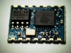

esp8266 - Сообщество разработчиков
Перейти к содержимому
ESP8266 — подключение и обновление прошивки
Модуль esp8266 подключен USB-TTL на 3,3 вольта
ESP8266 — быстрый старт для начинающих
Как правильно подключить ESP8266
Как подключить ESP8266 через Arduino
Как подключить ESP8266 через RaspberryPi
Нижеприведенные инструкции и схемы не являются «правильными» с точки зрения схемотехники и не должны применяться в реальных конечных устройствах. Это упрощенные инструкции для быстрого старта, чтобы вы могли с минимальным набором компонентов запустить свой модуль ESP8266. При этом все эти упрощенные схемы реально работают и проверены автором лично на различных модулях ESP8266.
Для проверки ESP8266, который вы только что приобрели, потребуется источник стабилизированного напряжения на 3,3 вольта.
Внимание! Допустимый диапазон напряжения питания модуля ESP8266 от 3,0 до 3,6 вольт. Подача повышенного напряжения питания на модуль гарантированно приведет к выходу ESP8266 из строя.
Чтобы проверить ESP8266 ESP-01 достаточно подключить три пина: VCC и CH_PD (chip enable) к питанию 3,3 вольт, а GND к земле. Если у вас не ESP-01, а другой модуль и на нем выведен GPIO15, то дополнительно еще потребуется подключить GPIO15 к земле.
При успешном старте заводской прошивки на модуле ESP8266 загорится красный светодиод (индикатор питания, на некоторых версиях модуля, например ESP-12, может отсутствовать) и пару раз мигнет синий (это индикатор передачи данных от модуля к терминалу по линии TX-RX, может иметь другой цвет) и в вашей беспроводной сети должна появится новая точка доступа с именем «ESP_XXXX», которую вы сможете увидеть с любого WiFi устройства. название точки доступа зависит от производителя прошивки и может быть другим, например AI-THINKER_AXXXXC. Если точка доступа появилась, то можно продолжить эксперименты далее, если нет, то еще раз проверьте питание, CH_PD, GND и если все подключено правильно то, скорее всего, у вас неисправный модуль, но есть надежда, что прошивка в модуле с нестандартными настройками и, возможно, вам поможет перепрошивка.
В минимальный набор для подключения и прошивки модуля ESP8266 входит:
1. Собственно сам модуль ESP8266
3. Набор проводов папа-мама для макетной платы или DUPONT M-F кабель
4. USB-TTL конвертер (ищите с переключателем на 5 и 3,3 вольт, либо версия на 3,3 вольта) на базе FTDI, PL2303 или аналогичном чипе. Идеальным будет вариант, когда на USB-TTL адаптере будут выведены DTR и RTS — это позволит быстро загружать прошивку из Arduino IDE, UDK, Sming без ручного переключения GPIO0 на землю.
В случае если у вас USB-TTL конвертер на 5 вольт, то вам дополнительно потребуется стабилизатор питания на чипе 1117 или аналогичном (ток не менее 300 мА, желательно с конденсаторной обвязкой в виде готового модуля, но сойдет и просто микросхема) и источник питания (для 1117 отлично подойдет пятивольтовая зарядка от смартфона). Вообще, лучше не питать ESP8266 от USB-TTL конвертера или Arduino, а использовать отдельный источник питания — это избавит вас от множества проблем.
В расширенный набор для постоянной и комфортной работы с модулем ESP8266 вам дополнительно потребуются разъемы питания, DIP переключатели, резисторы и светодиоды. Я также использую недорогой USB монитор (Charger Doctor — листайте список дальше, ищите в белом корпусе), который позволяет видеть потребляемый ток (с китайской точностью) и немного защищает шину USB от короткого замыкания по питанию (при КЗ дисплей монитора начинает мигать)
1. Модулей ESP8266 достаточно много и первое, что вам потребуется, это идентифицировать ваш модуль и определить его распиновку. На нашем сайте есть замечательная таблица с фотографиями модулей и их распиновкой. Далее в этом кратком пособии для начинающих, мы будем подразумевать, что работаем с модулем ESP8266 ESP-01 V090. Если у вас другой модуль (например, ESP-07 или ESP-12) и на нем выведен пин GPIO15 (MTDO, HSPICS), то этот пин необходимо притянуть к земле как для обычного старта модуля, так и для режима прошивки.
2. Убедиться два раза, что питающее напряжение для модуля составляет 3,3 вольта.
Внимание! Допустимый диапазон напряжения питания модуля ESP8266 от 3,0 до 3,6 вольт. Подача повышенного напряжения питания на модуль гарантированно приведет к выходу ESP8266 из строя. Питающее напряжение может быть и существенно ниже 3 вольт, заявленных в документации
3. Если вы счастливый обладатель USB-TTL конвертера на 3,3 вольта то подключите модуль, как на рисунке ниже (левая часть). Если у вас только пятивольтовый USB-TTL, то используйте в качестве инструкции правую часть рисунка.
На первый взгляд схема справа может показаться «лучше» из-за использования отдельного источника питания, но это не совсем так — при использовании USB-TTL конвертера на 5 вольт желательно добавить делитель на резисторах для согласования пятивольтовых и трехвольтовых уровней логики либо модуль преобразования уровней.
Внимание! На правом рисунке подключение UTXD (TX) и URXD (RX) модуля ESP8266 к пятивольтовой TTL логике вы осуществляете на свой страх и риск! Документация на SoC ESP8266 сообщает, что модуль толерантен только к 3.3 вольтовой логике. В большинстве случаев подключение ESP8266 к пятивольтовой логике НЕ ПРИВОДИТ к выходу из строя ESP8266, однако именно вашему модулю может не повезти. Для исключение риска выхода модуля ESP8266 из строя рекомендуется использовать USB-TTL конвертер на 3,3 вольта, либо TTL 5v-3.3v конвертеры либо делитель на резисторах (на рисунке не показан). Более подробно о согласовании логических уровней можете прочитать здесь. Рисковые гики, вроде меня, подключают ESP8266 к пятивольтовой TTL логике напрямую и не заморачиваются.
Внимание! На правом рисунке показано подключение стабилизатора питания 1117 без дополнительной обвязки. Это работает, но все же, мы рекомендуем использовать схему подключения 1117 с конденсаторной обвязкой — сверьте схему подключения с даташитом на ваш стабилизатор либо используйте готовый модуль на базе 1117.

Красный — питание 3,3в
Черный — GND
Желтый — на стороне ESP8266 — RX, на стороне USB-TTL — TX
Зеленый — на стороне ESP8266 — TX, на стороне USB-TTL — RX
Оранжевый — CH_PD (CHIP ENABLE) — должен быть всегда подтянут к питанию
Синий — GPIO0 — подключен через выключатель к земле для включения режима перепрошивки модуля. Для обычного старта модуля GPIO0 можно оставить никуда не подключенным.
Розовый на правой схеме — нестабилизированное питание 5-8 вольт
4. Для старта модуля разорвите цепь GPIO0 — GND и можете подавать питание (причем именно в таком порядке: сначала убеждаемся, что GPIO0 «висит в воздухе», затем подаем питание на VCC и CH_PD)
Внимание! В вышеприведенных, реально работающих, примерах подключения ESP8266 используется подключение выводов ESP8266 «напрямую» к земле и питанию, либо «висячее в воздухе», как у нас никуда не подключен RESET, что является абсолютно неправильным и пригодно только для пары первых экспериментов, хотя и вполне работоспособно на подавляющем большинстве модулей. «Напрямую» к питанию подключается только вывод VCC, остальные выводы: CH_PD, RESET, GPIO0, GPIO2, должны быть подтянуты (pullup) к питанию (VCC) через резистор от 4,7 до 50 кОм. «Напрямую», к минусу (общему проводу) питания подключаем только GND, а GPIO0 подтягиваем (pulldown) тоже через резистор до 10k к GND для перевода модуль в режим загрузки прошивки. Если вы планируете и дальше экспериментировать с ESP8266, то сделайте грамотное подключение, впрочем так же как и для любых других микроконтроллеров. Детальное описание pullup и pulldown выходит за рамки данной статьи, но вы сможете легко нагуглить описание правильного подключения портов ввода-вывода. «Правильное» подключение позволит вам избежать множества «чудес» и проблем и будет неизбежно необходимым при возникновении затруднений с запуском или перепрошивкой модуля ESP8266.
Как правильно подключить ESP8266
Если вы планируете заниматься с ESP8266 больше, чем один вечер, то вам потребуется вариант подключения, обеспечивающий более высокую стабильность. Ниже приводятся две схемы подключения: с поддержкой автозагрузки прошивки из Arduino IDE, UDK, Sming и без нее.

Схема подключения ESP8266 (без автозагрузки прошивки, прошиваемся предварительно установив перемычку BURN и перезагрузив модуль)
Схема подключения с поддержкой автозагрузки прошивки из Arduino IDE, UDK, Sming. Для Flash Download Tool и XTCOM_UTIL, возможно, потребуется отключение RTS/DTR. Если RTS и DTR вам отключать неудобно, то можно добавить в схему перемычки
На этих схемах не показано подключение ADC и свободных GPIO — их подключение будет зависеть от того, что вы захотите реализовать, но если хотите стабильности, то не забудьте притянуть все GPIO к питанию (pullup), а ADC к земле (pulldown) через подтягивающие резисторы.
Резисторы на 10k могут заменены на другие от 4,7k до 50k, за исключением GPIO15 — его номинал должен быть до 10k. Номинал конденсатора, который сглаживает высокочастотные пульсации, может быть другим.
Соединение RESET и GPIO16 через резистор deep sleep на 470 Ом вам потребуется, если вы будете использовать режим deep sleep: для выхода из режима глубокого сна модуль перезагружает сам себя, подавая низкий уровень на GPIO16. Без этого соединения глубокий сон будет вечным для вашего модуля.
На первый взгляд на этих схемах кажется, что GPIO0, GPIO2, GPIO15, GPIO1 (TX), GPIO3 (RX) заняты и вы не можете их использовать для своих целей, но это не так. Высокий уровень на GPIO0 и GPIO2, низкий на GPIO15 требуются только для старта модуля, а в последующем вы можете использовать их по своему усмотрению, только не забудьте обеспечить требуемые уровни до перезагрузки модуля.
Можно использовать и TX, RX как GPIO1 и GPIO3 соответственно, не забывая о том, что при старте модуля любая прошивка будет дергать TX, отправляя отладочную информацию в UART0 на скорости 74480, но после успешной загрузки вы можете использовать их не только как UART0 для обмена данными с другим устройством, но и как обычные GPIO.
Для модулей, имеющих меньшее количество разведенных пинов, как например, ESP-01 подключение неразведенных пинов не требуется, т.е. на ESP-01 разведены только: VCC, GND, GPIO0, GPIO2, CH_PD и RESET — вот только их и подтягиваете. Нет никакой необходимости припаиваться прямо к микросхеме ESP8266EX и притягивать неразведенные пины, только если вам это действительно необходимо.
Данные схемы подключения родились после множества экспериментов, проведенных нашими форумчанами и собраны по крупицам из разрозненной и недоступной изначально документации нашим сообществом, я всего лишь постарался объединить эти знания в одном месте. Множество советов по подключению вы найдете на нашем форуме. Там же вы сможете задать интересующие вас вопросы или найти помощь в решении проблем. Если вы увидели ошибку, неточность в этой статье или вам есть что добавить, то сообщите мне об этом в специальной теме на нашем форуме.
Внимание! Даже эти схемы нельзя назвать «идеальными». Совершенству нет предела: удобно подключить второй USB-TTL к UART1 (c ESP8266 можно взять только GND и UTXD1, т.е. GPIO2) для подключения отладочного терминала (потребуется второй USB-TTL конвертер) — тогда можно будет прошивать модуль ESP8266 через UART0 без отключения терминала отладки на UART1. Неплохо будет подключить резисторы малого номинала к выводам обоих UART, поставить диод в линию RTS, добавить конденсатор в линию питания для гашения низкочастотных импульсов и т.д. Очень удобно, например, сделано в этой отладочной плате: на все GPIO подключены светодиоды, на ADC подключен фоторезистор, но жаль, что нет кнопки RESET и перемычка только одна на GPIO0.
Правильным будет сказать вам, что не существует идеальной и в тоже время универсальной схемы подключения ESP8266. Все дело в том, что очень многое зависит от прошивки, которую вы собираетесь туда залить. Вышеприведенные схемы рассчитаны на новичков, которые только начинают осваивать ESP8266, для экспериментов. Для реальных проектов, возможно, вам придется немного изменить схему. Например, для прошивки TCP2UART нужно подключить RTS к GPIO15, а CTS к GPIO13. Также в реальных проектах рекомендую уделить особое внимание питанию.
Подключение ESP8266 через Arduino
Если у вас под рукой не оказалось USB-TTL конвертера на 3,3в, но есть Arduino со встроенным USB-TTL конвертером, то можно использовать такую схему подключения
ESP8266 подключение через Arduino
На что обратить внимание:
1. Arduino Reset подключен к GND (синий провод) чтобы не запускался микроконтроллер на Arduino, в данном виде мы используем Arduino как прозрачный USB-TTL конвертер
2. RX и TX подключены не «на перекрест», а прямо — RX — RX (зеленый), TX — TX (желтый)
3. Все остальное подключено так же, как и в предыдущих примерах
Внимание! В этой схеме также требуется согласовывать уровни TTL 5 вольт Arduino и 3.3 вольта на ESP8266, однако неплохо работает и так.
Внимание! На Arduino может быть установлен стабилизатор питания, который не выдержит ток, требуемый для ESP8266, поэтому прежде, чем производить подключение сверьтесь с даташитом на тот стабилизатор, который установлен именно у вас. Не подключайте другие энергопотребляющие компоненты одновременно с ESP8266 в связи с риском выхода из строя встроенного в Arduino стабилизатора питания.
Существует и другая схема подключения Arduino и ESP8266 с использованием SoftSerial. В виду того, что для библиотеки SoftSerial скорость порта в 115200 является слишком большой и не гарантирует стабильную работу, мы не рекомендуем использовать такой способ подключения, хотя есть люди, у которых все стабильно работает (правда только на скорости 9600). Скетч для такой схемы подключения (спасибо nec3540A)
Подключение ESP8266 через RaspberryPi
Да, можно и «из пушки по воробьям», если под рукой нет вообще никакого USB-TTL конвертера. Подключение через малинку аналогично Arduino, но не такое удобное, т.к. дополнительно потребуется стабилизатор питания на 3,3 вольта. RX, TX, GND малинки подключаем к ESP8266, VCC и GND берем со стабилизированного источника питания на 3,3 вольта. Обратите внимание на то, что необходимо соединить GND всех устройств: малинки, стабилизатора и ESP8266. Брать 3,3 вольта питания с малинки для ESP8266 я лично не пробовал, поэтому вам предлагать такой вариант не буду. Если встроенный в вашу версию малины стабилизатор держит до 300 миллиампер дополнительной нагрузки, то подключение ESP8266 вполне возможно. Если сами захотите рискнуть — пожалуйста.
Итак, ESP8266 модуль к USB порту мы подключили (через USB-TTL или Arduino) теперь нужно убедится, что драйвера к вашим USB-TTL или Arduino встали корректно и в системе появился новый виртуальный последовательный порт. Вам понадобится программа — терминал последовательного порта. Можете использовать любую на ваш вкус, но она должна удовлетворять следующему требованию: каждая команда, которую вы отправляете с компьютера в последовательный порт должна завершаться символами CR+LF.
Большой популярностью пользуется программа CoolTerm (есть версии для Win/MAC/Linux).
Ваш покорный слуга является автором open-source программы ESPlorer, получившей международное признание. ESPlorer позволит вам не вводить AT команды вручную и легко работать с lua скриптами под NodeMCU (об этом в другой раз) и вы вполне можете использовать ее и как обычный терминал. Обсуждение ESPlorer на нашем форуме и на esp826.com
С подключением к последовательному порту придется немного поколдовать: в связи с разнообразием прошивок для ESP8266, подключение может осуществляться на разных скоростях. Нужную скорость можно определить путем простого перебора трех вариантов: 9600, 57600 и 115200. Как осуществить перебор? Подключаетесь в терминальной программе к вашему виртуальному последовательному порту выставив следующие параметры: 9600 8N1, затем перезагружаете модуль, отключив CH_PD (chip enable) от питания (USB-TTL при этом остается подключенным к USB) и снова включаете (т.е. просто передергиваете CH_PD, почему не передергиваем питание — читаем здесь, также можно кратковременно замкнуть RESET на землю для перезагрузки модуля) и наблюдаете данные в терминале. Во-первых, светодиоды на ESP8266 должны гореть как описано в начале статьи в разделе Проверка ESP8266. Во-вторых, в терминале вы должны увидеть «мусор» из разных символов, оканчивающийся строкой «ready». Если «ready» мы не видим, то переподключаемся терминалом на другой скорости и снова перезагружаем модуль.
На одном из вариантов скорости «ready» вы все-таки увидите — поздравляем, ваш модуль готов к работе. Если нет, то добро пожаловать к нам на форум — мы постараемся помочь, но предварительно почитайте эту тему.
Немного подробнее о «мусоре». Дело в том, что при старте прошивки, UART модуля ESP8266 переключается на скорость передачи 74 880 (вот такие забавные эти китайцы) выдает в UART отладочную информацию, затем переключает скорость порта на 115200 (ну или на 9600 или 57600 в зависимости от версии прошивки), так вот эта отладочная информация и видится нам как мусор, т.к. мы подключаемся к модулю на другой скорости. Можете подключится к ESP8266 на скорости 74 880 (ESPlorer поддерживает эту скорость) и вы эту отладочную информацию увидите, будет что-то вроде этого:
|
2 3 4 5 6 7 8 9 10 11 12 |
load 0x40100000, len 25052, room 16 load 0x3ffe8000, len 3312, room 12 |
НО! не увидите «ready» и не сможете управлять модулем, пока не переподключитесь на ту скорость, на которой работает прошивка.
Что делать дальше
Если у вас новый модуль, то, скорее всего, в нем прошита одна из старых кастомных AT прошивок. Скорее всего это какой-нибудь AI-THINKER AT v0.16 SDK v0.9.2. Проверить версию прошивку вы можете командой «AT+GMR», т.е. прямо в терминальной программе набираете AT+GMR без кавычек и жмете Enter. Модуль должен ответить «OK» и выдать версию прошивки (например, «0016000092» — в разных версиях AT прошивок формат вывода версии отличается). Управление модулем ESP8266 AT командами заслуживает отдельной статьи, однако вы легко сможете разобраться с этим и сами, воспользовавшись одним из наших справочников по AT командам:
На момент написания этой статьи актуальная версия прошивки для ESP8266:
версия AT команд v0.21, версия SDK v0.9.5
Модуль ESP8266 замечателен тем, что не требует специального программатора — обновление прошивки производится на том же железе, на котором вы подключаете модуль ESP8266 к компьютеру, т.е. тоже через USB-TTL конвертер (ну или Arduino или RPi). Для обновление прошивки на модуле ESP8266 проделайте следующее:
1. Скачайте новую версию прошивки с нашего сайта из раздела ESP8266 прошивки (вот ссылка на последнюю версию прошивки AT 0.21 SDK 0.9.5 на момент написания этой статьи)
2. Скачайте одну из утилит для прошивки ESP8266 в зависимости от вашей операционной системы из раздела ESP8266 Утилиты с нашего сайта
для Win систем подойдет XTCOM UTIL (удобно работать, если прошивка состоит из одного файла), мультиплатформенный esptool (требуется python, нужно указывать параметры в командной строке), FLASH DOWNLOAD TOOL (много настроек, удобно прошивать прошивки, состоящие из нескольких файлов, позволяет «собрать» прошивку в один файл из нескольких). Также вы найдете и другие программы для прошивки ESP8266 — попробуйте разные и пользуйтесь той, которая вам больше понравится.
3. Отключите от последовательного порта вашу терминальную программу
4. Отключите CH_PD от питания, подключите GPIO0 модуля к GND, подключите обратно CH_PD модуля.
5. Запускайте программу для прошивки модуля и загружайте новую прошивку в модуль ESP8266.
Загрузка прошивки в модуль обычно осуществляется на скорости 115200, но режим прошивки модуля поддерживает автоопределение скорости и прошивка может быть осуществлена на скорости от 9600 и выше. Максимальная скорость зависит от многих факторов (вашего USB-TTL конвертера, длины проводов и прочего) и может быть определена экспериментально на конфигурации именно вашего оборудования.
Все последние версии прошивок загружаются с нулевого адреса (0x00000).
Обсуждение этой статьи на нашем форуме
Обсуждение проблем при подключении ESP8266 на нашем форуме
В статье Обновление прошивки ESP8266 подробно описана загрузки прошивки в модуль с помощью программы XTCOM_UTIL.
Использованная литература
ESP8266 Datasheet — Specifications V4.1 — 08.09.2014 English
ESP8266 Datasheet — Beginners Guide V0.4.1 — 17.09.2014 English
ESP8266 AT Instruction Set v0.21 23.01.2015
ESP8266 Datasheet — Module Application Design Guide — 20.08.2014 English
Xtensa Instruction Set Architecture (ISA) Reference Manual
Запись опубликована 12.02.2015 в рубрике ESP8266 для начинающих, ESP8266 и железные вопросы, Все о ESP8266 с метками esp8266, esp8266 AT commands, ESP8266 AT команды, ESP8266 firmware, esp8266 подключение, ESP8266 прошивка.
Навигация по записям
← ESP8266 Espressif IoT SDK Programming Guide v0.9.5ESP8266 — обновление прошивки с помощью XTCOM_UTIL →
JLCPCB: 2$ за 5шт. PCB 1-4 слоя
Купоны & и EDA курсы
Бесплатный онлайн редактор схем
РУБРИКИ
СПРАВОЧНАЯ ИНФОРМАЦИЯ
ОБЛАКО ТЕГОВ
Android Ardiono IDE arduino esp8266 arduino ide Blynk datasheet EasyEDA ESP-01 ESP-12 ESP-12-D ESP-12-E ESP-12-Q ESP-12D ESP-12E ESP-12Q ESP-13 esp-wroom esp-wroom-02 esp8266 esp8266 AT commands ESP8266 AT команды esp8266 datasheet ESP8266 firmware ESP8266 SDK ESP8266 купить ESP8266 прошивка esp8266ex ESPD-12 ESPlorer instapush IoT iotmanager layouts mosquitto mqtt NodeMcu orange pi pinouts raspberry pi smart-js websockets WROOM WROOM-02 ws2812 ws2812b

Enter your email address:
Delivered by FeedBurner